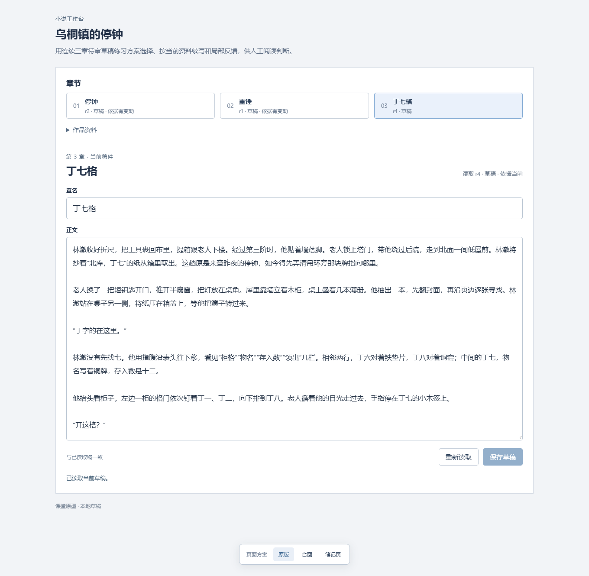
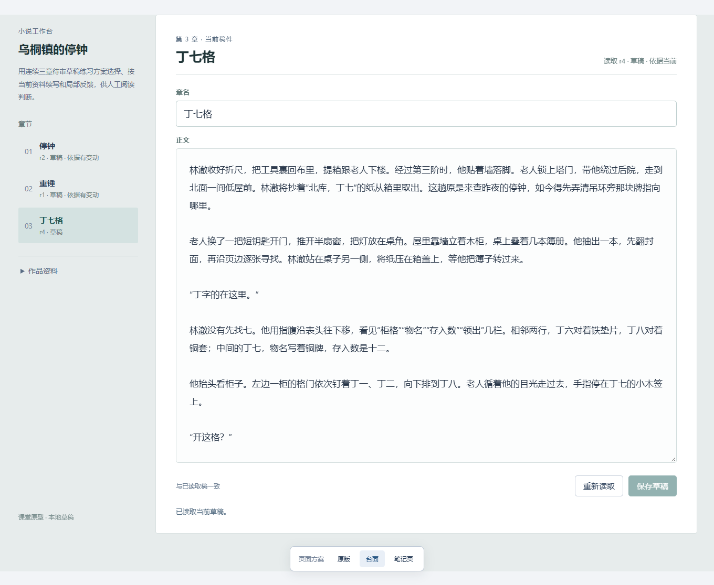
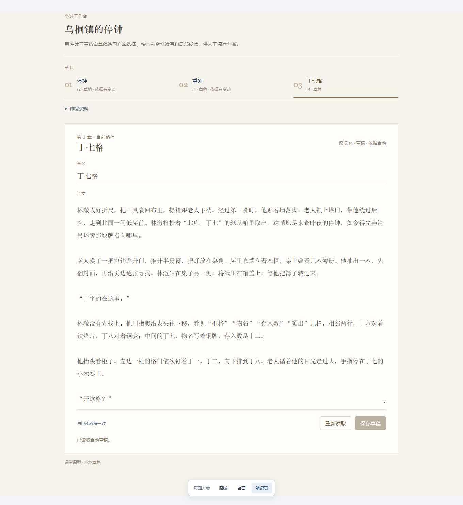
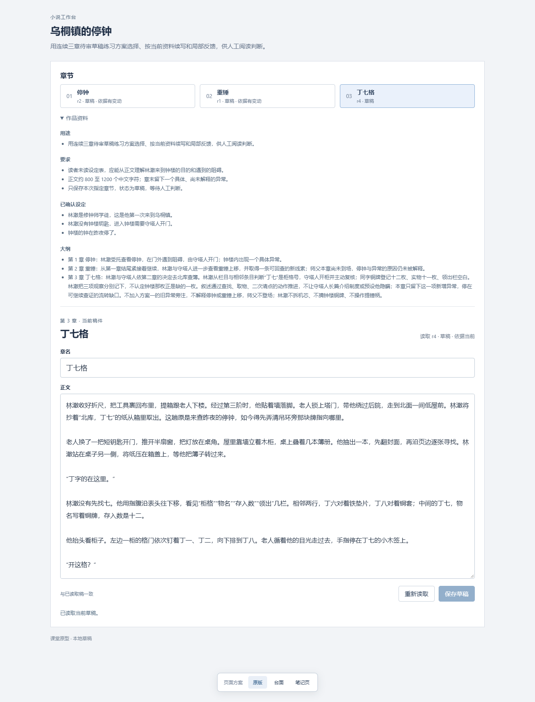
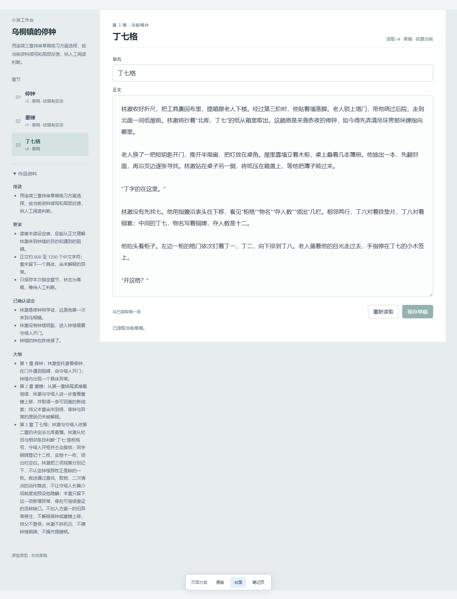
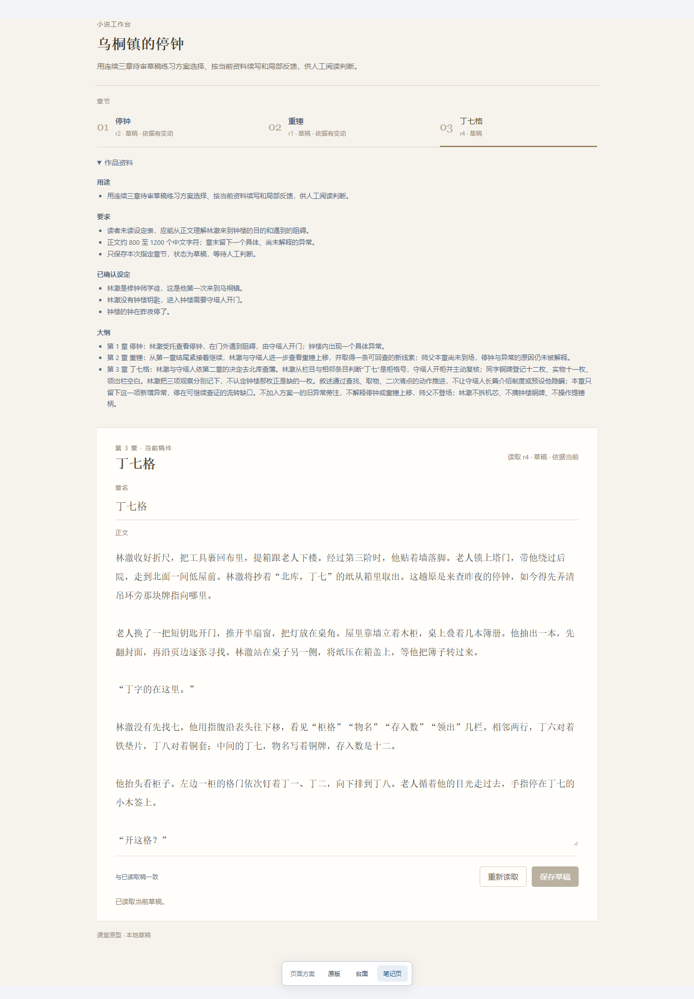
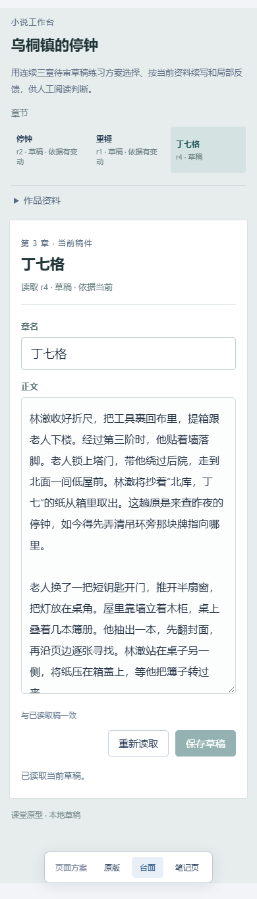
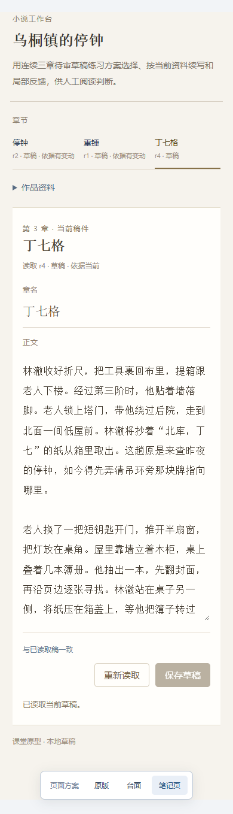

同一当前稿的三种页面方向
全部展示《丁七格》r4草稿。原版保留，另两种方向供比较。功能、位置和整体口吻分别判断，没有选择赢家。
图片是完整页面截图，正文编辑框里的全文另在完整记录中保留；每次截图将内部滚动位置回到开头，不表示全部章稿同屏可见。本轮没有保存或采用。点击图片可按原像素查看。
当前 r4 草稿
原版

明确的输入框边界、浅蓝选中章目和有底色的按钮，使编辑与当前章节容易定位。 导航占完整上方一行，正文在桌面更晚出现；较多边界使它更像编辑表单。台面

桌面左栏收纳章节与资料，当前正文在右侧较早出现；当前章的浅色块可辨。 展开长大纲时左栏较窄，文字形成高列；移动版仍变回纵向，不把桌面左栏收益推广到全部视口。笔记页

章目下线、连续纸面和衬线字保留阅读分节；输入框边界较轻，编辑入口的提示比原版弱。 字号、行距与外围收放使整页更高；同章全文不能同时显示，不能用较松的排布证明阅读更好。作品资料展开
原版

明确的输入框边界、浅蓝选中章目和有底色的按钮，使编辑与当前章节容易定位。 导航占完整上方一行，正文在桌面更晚出现；较多边界使它更像编辑表单。台面

桌面左栏收纳章节与资料，当前正文在右侧较早出现；当前章的浅色块可辨。 展开长大纲时左栏较窄，文字形成高列；移动版仍变回纵向，不把桌面左栏收益推广到全部视口。笔记页

章目下线、连续纸面和衬线字保留阅读分节；输入框边界较轻，编辑入口的提示比原版弱。 字号、行距与外围收放使整页更高；同章全文不能同时显示，不能用较松的排布证明阅读更好。窄屏当前草稿
原版
明确的输入框边界、浅蓝选中章目和有底色的按钮，使编辑与当前章节容易定位。 导航占完整上方一行，正文在桌面更晚出现；较多边界使它更像编辑表单。台面

桌面左栏收纳章节与资料，当前正文在右侧较早出现；当前章的浅色块可辨。 展开长大纲时左栏较窄，文字形成高列；移动版仍变回纵向，不把桌面左栏收益推广到全部视口。笔记页

章目下线、连续纸面和衬线字保留阅读分节；输入框边界较轻，编辑入口的提示比原版弱。 字号、行距与外围收放使整页更高；同章全文不能同时显示，不能用较松的排布证明阅读更好。